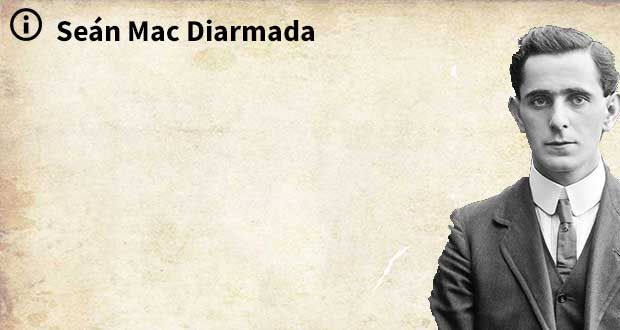
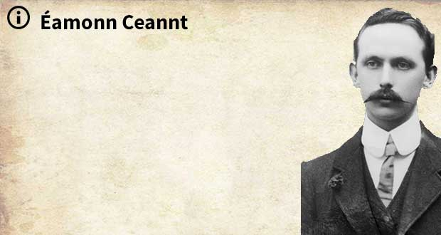
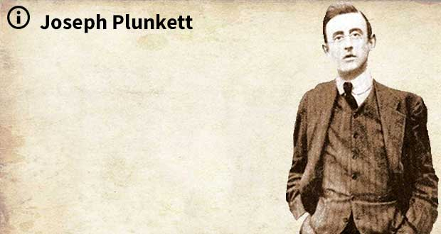
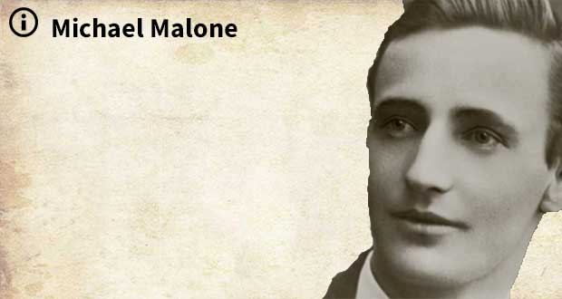
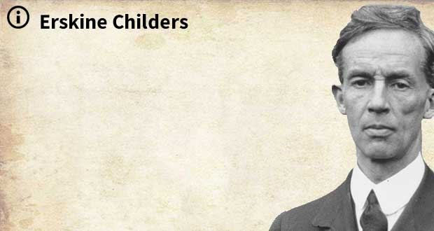

The Players

James ConnollyConnolly was born to Irish parents in the slums of Edinburgh in 1868. After leaving school at 11, he enlisted in the British Army at 14, giving a false name and age like his brother before him. After nearly seven years of service, he came disillusioned and deserted. Back in Edinburgh, he became involved with the Scottish Socialist Federation and, in 1895, moved with his young family to Dublin to take up the position of full-time secretary for the Dublin Socialist Club. Economic hardship drove him to America for a while, where he still kept involved with the socialist cause. On his return to Dublin in 1910, he became involved with Jim Larkin and the Irish Transport and General Workers Union. In 1912 he co-founded, with Larkin and William O'Brien, The Irish Labour Party as the political wing of the Union. Following the Lockout of 1913, he co-founded the Irish Citizen Army with the aim of defending workers and stikers from the Dublin Metropolitan Police. Numbers were small, maybe 250 at most, but their aim was nothing less than an independent, and socialist, Irish nation. Connolly was initially sceptical about the motivations of the leadership of the Irish Volunteers, they were too bourgeois and had no understanding of the necessity of economic independence. The IRB leaders met Connolly to try and talk him down from his threat to take the ICA out against the British on their own, he felt they were just posturing. Both organisations agreed to act together. The statue of James Connolly outside Liberty Hall During the Rising, Connolly was the Commandant of the Dublin Brigade until he was badly injured in the GPO. Following the surrender, Connolly was held in Dublin Castle, the room is now called the Connolly Room, and, following his death sentence, he was taken by military ambulance to the Royal Hospital Kilmainham. From there he was taken to the gaol for the sentence to be carried out. Connolly was so badly injured that an attending doctor felt he only had a day or two to live anyway. As a result, he was carried to the prison courtyard on a stretcher and had to be tied to a chair in order that he could be shot. Major Heathcore of the Sherwood Foresters who oversaw some of the executions remembered the Connolly was probably drugged and almost dead and that he could not sit upright in the chair when he was shot |
Patrick Pearse
In the week before the Rising, the council of the IRB presented MacNeill with a letter, allegedly stolen from high-ranking British staff in Dublin Castle, indicating that his arrest, and that of all the other nationalist leaders, was imminent. The letter, called the Castle Document, was, however, a forgery. When MacNeill learned about the IRB's rising plans, and when he was informed that Roger Casement was about to land in County Kerry with a shipment of German arms, he was reluctantly persuaded to go along with them, believing British action was now imminent and mobilisation of the Volunteers would, at this stage, be a defensive act.However, on learning of the arrest of Casement, and the loss of the promised German arms, MacNeill countermanded the order for the Rising. He asked men he trusted to deliver the order to as many commanders as possible. He himself brought a longer version of the note to the Sunday Independent newspaper, where it was inserted as an advertisement. Helena Moloney was at Liberty Hall, the headquarters of the Citizen Army, on Easter Sunday morning: MacNeill’s prevarication over whether or not to go ahead with the rebellion, combined with the late notice, meant that the message caused confusion among rebels, especially in areas furthest from Dublin, severely reducing the number of volunteers who reported for duty on the day. Members of the Irish Republican Brotherhood delayed the Dublin rebellion by 24 hours. Thanks to MacNeill's countermand, only a small percentage of approximately 10,000 volunteers took part in the actual rising. The number of Brisith soldiers in Ireland at the time was low thanks to the first world war, so the extra volunteers would have no doubt made a huge difference to the events of the week ahead. |

Thomas MacDonagh
In the early hours between the 24th and 25th of April 1914, almost 25,000 rifles and somewhere between 3 and 5 million rounds of amunition was successfully landed at Larne, Donaghadee and Bangor, a smuggling operation, although authorities were aware of it but turned a blind eye, to equip the Ulster Volunteer Force, who had been founded in 1912 to block any attempt by the British Government to impose domestic self-government, Home Rule, in Ireland. ******** the Irish Volunteers organised the landing of 900 Mauser rifles at Howth on the 26th of July, 1914. As this took place during the day, it attracted a fair bit of attention and the harbour master informed the Dublin Metropolitan Police, who appealed for Military assistance. They were joined at Clontarf by a detachment of the King's Own Scottish Borderers, who had been sent from the Royal Barracks (now Collins Barracks). Volunteers fought both the pokice and the military and in the resulting confusion Thomas MacDonagh and Bulmer Hobson were able to guide volunteers to hide the guns in the grounds of the nearby Christian Brothers' school. The police did seize 19 weapons but had to return them later when a court ruled that their seizure had been illegal. PARAGRAPH2In the early hours between the 24th and 25th of April 1914, almost 25,000 rifles and somewhere between 3 and 5 million rounds of amunition was successfully landed at Larne, Donaghadee and Bangor, a smuggling operation, although authorities were aware of it but turned a blind eye, to equip the Ulster Volunteer Force, who had been founded in 1912 to block any attempt by the British Government to impose domestic self-government, Home Rule, in Ireland. ******** the Irish Volunteers organised the landing of 900 Mauser rifles at Howth on the 26th of July, 1914. As this took place during the day, it attracted a fair bit of attention and the harbour master informed the Dublin Metropolitan Police, who appealed for Military assistance. They were joined at Clontarf by a detachment of the King's Own Scottish Borderers, who had been sent from the Royal Barracks (now Collins Barracks). Volunteers fought both the pokice and the military and in the resulting confusion Thomas MacDonagh and Bulmer Hobson were able to guide volunteers to hide the guns in the grounds of the nearby Christian Brothers' school. The police did seize 19 weapons but had to return them later when a court ruled that their seizure had been illegal. |

Thomas J. Clarke
In the early hours between the 24th and 25th of April 1914, almost 25,000 rifles and somewhere between 3 and 5 million rounds of amunition was successfully landed at Larne, Donaghadee and Bangor, a smuggling operation, although authorities were aware of it but turned a blind eye, to equip the Ulster Volunteer Force, who had been founded in 1912 to block any attempt by the British Government to impose domestic self-government, Home Rule, in Ireland. ******** the Irish Volunteers organised the landing of 900 Mauser rifles at Howth on the 26th of July, 1914. As this took place during the day, it attracted a fair bit of attention and the harbour master informed the Dublin Metropolitan Police, who appealed for Military assistance. They were joined at Clontarf by a detachment of the King's Own Scottish Borderers, who had been sent from the Royal Barracks (now Collins Barracks). Volunteers fought both the pokice and the military and in the resulting confusion Thomas MacDonagh and Bulmer Hobson were able to guide volunteers to hide the guns in the grounds of the nearby Christian Brothers' school. The police did seize 19 weapons but had to return them later when a court ruled that their seizure had been illegal. PARAGRAPH2In the early hours between the 24th and 25th of April 1914, almost 25,000 rifles and somewhere between 3 and 5 million rounds of amunition was successfully landed at Larne, Donaghadee and Bangor, a smuggling operation, although authorities were aware of it but turned a blind eye, to equip the Ulster Volunteer Force, who had been founded in 1912 to block any attempt by the British Government to impose domestic self-government, Home Rule, in Ireland. ******** the Irish Volunteers organised the landing of 900 Mauser rifles at Howth on the 26th of July, 1914. As this took place during the day, it attracted a fair bit of attention and the harbour master informed the Dublin Metropolitan Police, who appealed for Military assistance. They were joined at Clontarf by a detachment of the King's Own Scottish Borderers, who had been sent from the Royal Barracks (now Collins Barracks). Volunteers fought both the pokice and the military and in the resulting confusion Thomas MacDonagh and Bulmer Hobson were able to guide volunteers to hide the guns in the grounds of the nearby Christian Brothers' school. The police did seize 19 weapons but had to return them later when a court ruled that their seizure had been illegal. |

SeÁn Mac Diarmada
In the week before the Rising, the council of the IRB presented MacNeill with a letter, allegedly stolen from high-ranking British staff in Dublin Castle, indicating that his arrest, and that of all the other nationalist leaders, was imminent. The letter, called the Castle Document, was, however, a forgery. When MacNeill learned about the IRB's rising plans, and when he was informed that Roger Casement was about to land in County Kerry with a shipment of German arms, he was reluctantly persuaded to go along with them, believing British action was now imminent and mobilisation of the Volunteers would, at this stage, be a defensive act.However, on learning of the arrest of Casement, and the loss of the promised German arms, MacNeill countermanded the order for the Rising. He asked men he trusted to deliver the order to as many commanders as possible. He himself brought a longer version of the note to the Sunday Independent newspaper, where it was inserted as an advertisement. Helena Moloney was at Liberty Hall, the headquarters of the Citizen Army, on Easter Sunday morning: MacNeill’s prevarication over whether or not to go ahead with the rebellion, combined with the late notice, meant that the message caused confusion among rebels, especially in areas furthest from Dublin, severely reducing the number of volunteers who reported for duty on the day. Members of the Irish Republican Brotherhood delayed the Dublin rebellion by 24 hours. Thanks to MacNeill's countermand, only a small percentage of approximately 10,000 volunteers took part in the actual rising. The number of Brisith soldiers in Ireland at the time was low thanks to the first world war, so the extra volunteers would have no doubt made a huge difference to the events of the week ahead. |

Éamonn Ceannt
In the early hours between the 24th and 25th of April 1914, almost 25,000 rifles and somewhere between 3 and 5 million rounds of amunition was successfully landed at Larne, Donaghadee and Bangor, a smuggling operation, although authorities were aware of it but turned a blind eye, to equip the Ulster Volunteer Force, who had been founded in 1912 to block any attempt by the British Government to impose domestic self-government, Home Rule, in Ireland. ******** the Irish Volunteers organised the landing of 900 Mauser rifles at Howth on the 26th of July, 1914. As this took place during the day, it attracted a fair bit of attention and the harbour master informed the Dublin Metropolitan Police, who appealed for Military assistance. They were joined at Clontarf by a detachment of the King's Own Scottish Borderers, who had been sent from the Royal Barracks (now Collins Barracks). Volunteers fought both the pokice and the military and in the resulting confusion Thomas MacDonagh and Bulmer Hobson were able to guide volunteers to hide the guns in the grounds of the nearby Christian Brothers' school. The police did seize 19 weapons but had to return them later when a court ruled that their seizure had been illegal. PARAGRAPH2In the early hours between the 24th and 25th of April 1914, almost 25,000 rifles and somewhere between 3 and 5 million rounds of amunition was successfully landed at Larne, Donaghadee and Bangor, a smuggling operation, although authorities were aware of it but turned a blind eye, to equip the Ulster Volunteer Force, who had been founded in 1912 to block any attempt by the British Government to impose domestic self-government, Home Rule, in Ireland. ******** the Irish Volunteers organised the landing of 900 Mauser rifles at Howth on the 26th of July, 1914. As this took place during the day, it attracted a fair bit of attention and the harbour master informed the Dublin Metropolitan Police, who appealed for Military assistance. They were joined at Clontarf by a detachment of the King's Own Scottish Borderers, who had been sent from the Royal Barracks (now Collins Barracks). Volunteers fought both the pokice and the military and in the resulting confusion Thomas MacDonagh and Bulmer Hobson were able to guide volunteers to hide the guns in the grounds of the nearby Christian Brothers' school. The police did seize 19 weapons but had to return them later when a court ruled that their seizure had been illegal. |
|

Joseph Plunkett
In the early hours between the 24th and 25th of April 1914, almost 25,000 rifles and somewhere between 3 and 5 million rounds of amunition was successfully landed at Larne, Donaghadee and Bangor, a smuggling operation, although authorities were aware of it but turned a blind eye, to equip the Ulster Volunteer Force, who had been founded in 1912 to block any attempt by the British Government to impose domestic self-government, Home Rule, in Ireland. ******** the Irish Volunteers organised the landing of 900 Mauser rifles at Howth on the 26th of July, 1914. As this took place during the day, it attracted a fair bit of attention and the harbour master informed the Dublin Metropolitan Police, who appealed for Military assistance. They were joined at Clontarf by a detachment of the King's Own Scottish Borderers, who had been sent from the Royal Barracks (now Collins Barracks). Volunteers fought both the pokice and the military and in the resulting confusion Thomas MacDonagh and Bulmer Hobson were able to guide volunteers to hide the guns in the grounds of the nearby Christian Brothers' school. The police did seize 19 weapons but had to return them later when a court ruled that their seizure had been illegal. PARAGRAPH2In the early hours between the 24th and 25th of April 1914, almost 25,000 rifles and somewhere between 3 and 5 million rounds of amunition was successfully landed at Larne, Donaghadee and Bangor, a smuggling operation, although authorities were aware of it but turned a blind eye, to equip the Ulster Volunteer Force, who had been founded in 1912 to block any attempt by the British Government to impose domestic self-government, Home Rule, in Ireland. ******** the Irish Volunteers organised the landing of 900 Mauser rifles at Howth on the 26th of July, 1914. As this took place during the day, it attracted a fair bit of attention and the harbour master informed the Dublin Metropolitan Police, who appealed for Military assistance. They were joined at Clontarf by a detachment of the King's Own Scottish Borderers, who had been sent from the Royal Barracks (now Collins Barracks). Volunteers fought both the pokice and the military and in the resulting confusion Thomas MacDonagh and Bulmer Hobson were able to guide volunteers to hide the guns in the grounds of the nearby Christian Brothers' school. The police did seize 19 weapons but had to return them later when a court ruled that their seizure had been illegal. |

Countess Constance Markievicz
In the week before the Rising, the council of the IRB presented MacNeill with a letter, allegedly stolen from high-ranking British staff in Dublin Castle, indicating that his arrest, and that of all the other nationalist leaders, was imminent. The letter, called the Castle Document, was, however, a forgery. When MacNeill learned about the IRB's rising plans, and when he was informed that Roger Casement was about to land in County Kerry with a shipment of German arms, he was reluctantly persuaded to go along with them, believing British action was now imminent and mobilisation of the Volunteers would, at this stage, be a defensive act.However, on learning of the arrest of Casement, and the loss of the promised German arms, MacNeill countermanded the order for the Rising. He asked men he trusted to deliver the order to as many commanders as possible. He himself brought a longer version of the note to the Sunday Independent newspaper, where it was inserted as an advertisement. Helena Moloney was at Liberty Hall, the headquarters of the Citizen Army, on Easter Sunday morning: MacNeill’s prevarication over whether or not to go ahead with the rebellion, combined with the late notice, meant that the message caused confusion among rebels, especially in areas furthest from Dublin, severely reducing the number of volunteers who reported for duty on the day. Members of the Irish Republican Brotherhood delayed the Dublin rebellion by 24 hours. Thanks to MacNeill's countermand, only a small percentage of approximately 10,000 volunteers took part in the actual rising. The number of Brisith soldiers in Ireland at the time was low thanks to the first world war, so the extra volunteers would have no doubt made a huge difference to the events of the week ahead. |

Michael Malone
In the early hours between the 24th and 25th of April 1914, almost 25,000 rifles and somewhere between 3 and 5 million rounds of amunition was successfully landed at Larne, Donaghadee and Bangor, a smuggling operation, although authorities were aware of it but turned a blind eye, to equip the Ulster Volunteer Force, who had been founded in 1912 to block any attempt by the British Government to impose domestic self-government, Home Rule, in Ireland. ******** the Irish Volunteers organised the landing of 900 Mauser rifles at Howth on the 26th of July, 1914. As this took place during the day, it attracted a fair bit of attention and the harbour master informed the Dublin Metropolitan Police, who appealed for Military assistance. They were joined at Clontarf by a detachment of the King's Own Scottish Borderers, who had been sent from the Royal Barracks (now Collins Barracks). Volunteers fought both the pokice and the military and in the resulting confusion Thomas MacDonagh and Bulmer Hobson were able to guide volunteers to hide the guns in the grounds of the nearby Christian Brothers' school. The police did seize 19 weapons but had to return them later when a court ruled that their seizure had been illegal. PARAGRAPH2In the early hours between the 24th and 25th of April 1914, almost 25,000 rifles and somewhere between 3 and 5 million rounds of amunition was successfully landed at Larne, Donaghadee and Bangor, a smuggling operation, although authorities were aware of it but turned a blind eye, to equip the Ulster Volunteer Force, who had been founded in 1912 to block any attempt by the British Government to impose domestic self-government, Home Rule, in Ireland. ******** the Irish Volunteers organised the landing of 900 Mauser rifles at Howth on the 26th of July, 1914. As this took place during the day, it attracted a fair bit of attention and the harbour master informed the Dublin Metropolitan Police, who appealed for Military assistance. They were joined at Clontarf by a detachment of the King's Own Scottish Borderers, who had been sent from the Royal Barracks (now Collins Barracks). Volunteers fought both the pokice and the military and in the resulting confusion Thomas MacDonagh and Bulmer Hobson were able to guide volunteers to hide the guns in the grounds of the nearby Christian Brothers' school. The police did seize 19 weapons but had to return them later when a court ruled that their seizure had been illegal. |
|

Erskine ChildersBorn in London in 1870, Childers was the son of an English professor of Oriental languages and a mother who was very much part of the Anglo-Irish aristocracy. Both parents succumbed to tuberculosis when Childers was only six years old, and he grew up in the care of an uncle and aunt amid the lush 15,000 acre Glendalogh estate in Wicklow. He followed a line from public school to Cambridge to a desk job in Westminister to the British army in 1899 and to South Africa to fight in the Boer War. The cruelty he witnessed first hand led him to question the merits of the imposition of British rule. A life long passion for sailing fed into his best selling thriller of 1903, "The Riddle Of The Sands". Hailed as the first spy novel, it made him a household name. Childers during the Boer War Childers married Molly Osgood, of a prominent Boston family, in 1904, and they received, from her father, the elegant 50-foot yacht The Asgard, custom built to Childers' own specifications, as a wedding present. Their first son, Erskine Hamilton Childers, born the following year, would spend his life in Irish politics and end his career as the fourth preseident of Ireland from 1973 until his death a year later. A motor tour of Ireland in 1908 further cemented his opion that colonialism was flawed and he became first a supported of Home Rule and then a member of the Irish Volunteers in 1913. Following on from the Edward Carson led Ulster Volunteers' successfull landing of a shipment of 35,000 German Rifles at Larne, a clear indication that Home rule, in any form, would face violent opposition, in 1914, Childers and his wife joined committee of well-to-do Republican sympathizers, which included Roger Casement, amongst others, with a view to arming the Irish Volunteers in a similar manner. A purchase of 1,500 single shot Mauser rifles and 49,000 rounds of amunition was negotiated with a German munitions firm and, despite the British authorities anticipation of such a shipment, Childers managed, with the help of false reports that a fishing trawler was to be used, to land at Howth Harbour of July 26th, 1914. The outbreak of World War I saw Childers throw his support behind the allied cause and he rose to the rank of Major in naval intelligence. He was appalled by the execution of the leaders of the Easter Rising and subsequently joined Sinn Fein, serving as the Chief Secretary for the delegation that negotiated the Anglo-Irish Treaty, although he opposed the outcome, and was a campaign advisor for de Valera and the Anti-treaty forces. In 1922, he was arrested by Free State soldiers, and the possession of what de Valera described as "a tiny automatic, little better than a toy and in no sense a war weapon", which had been a gift from Michael Collins, was used by the Free State government as a legal excuse to order the death penalty. He was offered the chance to switch his allegiance to the Free State in order that his life might be spared, but he refused, and was executed by firing squad on November 24th, 1922 at the Beggar's Bush Barracks in Dublin. He took the time to shake hands with each of the firing squad before hand. "He died the Prince he was", de Valera said of him, "Of all the men I ever met, I would say he was the noblest". |
Countess Constance Markievicz
In the week before the Rising, the council of the IRB presented MacNeill with a letter, allegedly stolen from high-ranking British staff in Dublin Castle, indicating that his arrest, and that of all the other nationalist leaders, was imminent. The letter, called the Castle Document, was, however, a forgery. When MacNeill learned about the IRB's rising plans, and when he was informed that Roger Casement was about to land in County Kerry with a shipment of German arms, he was reluctantly persuaded to go along with them, believing British action was now imminent and mobilisation of the Volunteers would, at this stage, be a defensive act.However, on learning of the arrest of Casement, and the loss of the promised German arms, MacNeill countermanded the order for the Rising. He asked men he trusted to deliver the order to as many commanders as possible. He himself brought a longer version of the note to the Sunday Independent newspaper, where it was inserted as an advertisement. Helena Moloney was at Liberty Hall, the headquarters of the Citizen Army, on Easter Sunday morning: MacNeill’s prevarication over whether or not to go ahead with the rebellion, combined with the late notice, meant that the message caused confusion among rebels, especially in areas furthest from Dublin, severely reducing the number of volunteers who reported for duty on the day. Members of the Irish Republican Brotherhood delayed the Dublin rebellion by 24 hours. Thanks to MacNeill's countermand, only a small percentage of approximately 10,000 volunteers took part in the actual rising. The number of Brisith soldiers in Ireland at the time was low thanks to the first world war, so the extra volunteers would have no doubt made a huge difference to the events of the week ahead. |
Michael Malone
In the early hours between the 24th and 25th of April 1914, almost 25,000 rifles and somewhere between 3 and 5 million rounds of amunition was successfully landed at Larne, Donaghadee and Bangor, a smuggling operation, although authorities were aware of it but turned a blind eye, to equip the Ulster Volunteer Force, who had been founded in 1912 to block any attempt by the British Government to impose domestic self-government, Home Rule, in Ireland. ******** the Irish Volunteers organised the landing of 900 Mauser rifles at Howth on the 26th of July, 1914. As this took place during the day, it attracted a fair bit of attention and the harbour master informed the Dublin Metropolitan Police, who appealed for Military assistance. They were joined at Clontarf by a detachment of the King's Own Scottish Borderers, who had been sent from the Royal Barracks (now Collins Barracks). Volunteers fought both the pokice and the military and in the resulting confusion Thomas MacDonagh and Bulmer Hobson were able to guide volunteers to hide the guns in the grounds of the nearby Christian Brothers' school. The police did seize 19 weapons but had to return them later when a court ruled that their seizure had been illegal. PARAGRAPH2In the early hours between the 24th and 25th of April 1914, almost 25,000 rifles and somewhere between 3 and 5 million rounds of amunition was successfully landed at Larne, Donaghadee and Bangor, a smuggling operation, although authorities were aware of it but turned a blind eye, to equip the Ulster Volunteer Force, who had been founded in 1912 to block any attempt by the British Government to impose domestic self-government, Home Rule, in Ireland. ******** the Irish Volunteers organised the landing of 900 Mauser rifles at Howth on the 26th of July, 1914. As this took place during the day, it attracted a fair bit of attention and the harbour master informed the Dublin Metropolitan Police, who appealed for Military assistance. They were joined at Clontarf by a detachment of the King's Own Scottish Borderers, who had been sent from the Royal Barracks (now Collins Barracks). Volunteers fought both the pokice and the military and in the resulting confusion Thomas MacDonagh and Bulmer Hobson were able to guide volunteers to hide the guns in the grounds of the nearby Christian Brothers' school. The police did seize 19 weapons but had to return them later when a court ruled that their seizure had been illegal. |